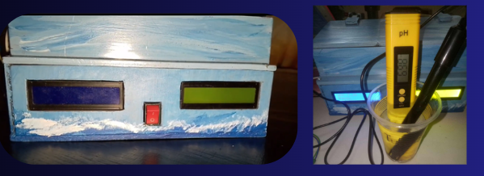
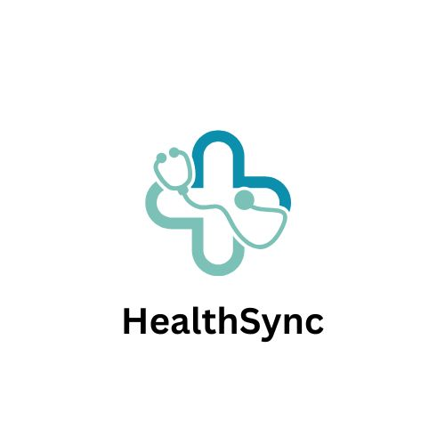
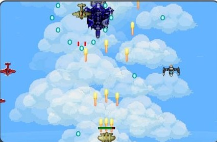
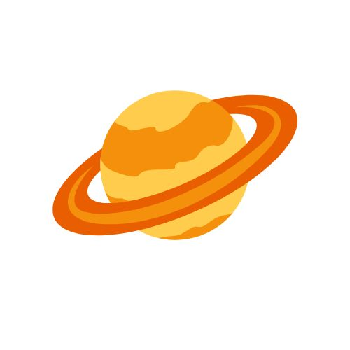
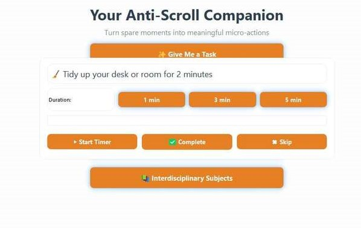
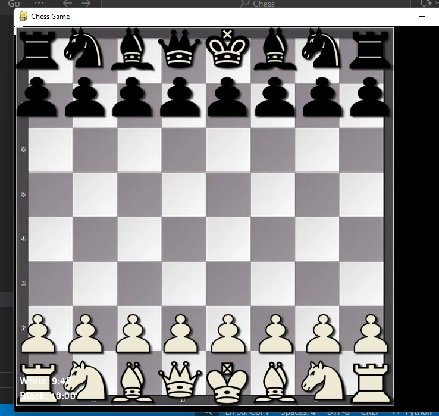

Water Quality Tester

Role: Concept Designer behind the device.
A portable Arduino-based device that tests pH,
turbidity, and temperature of water from natural sources.
Conducted testing in nearby rivers and communities to assess water quality
and presented findings to local stakeholders, emphasizing the impact on
public health and ecosystem sustainability.
HealthSync Unified Health Management System

Technology: Python Researched Based Symptom Predictor for Pets and People
A user-friendly desktop health management system designed to bridge the gap
between human and pet healthcare.
Tailored for clinics, animal shelters, and even individual users, it features a
centralized dashboard where you can:
- 🐾 Track medical histories of pets and patients
- 👥 Manage user and pet profiles
- 📊 Monitor health statistics
- ✅ Ensure better care through a clean and intuitive interface
View Repository
SkyRaider 82

Technology: Python + Pygame
A fast-paced, retro-themed side-scrolling shooter built using Python and Pygame.
Players control a futuristic aircraft in a mission to eliminate enemies
and dodge obstacles.
View Repository
SolNerd

Technology: Astronomy / Astrophysics App
SolNerd is an educational app focused on astronomy and
astrophysics, designed for both information and learning purposes.
The app provides accessible and engaging insights into the universe, making complex
space concepts easier to understand for students, hobbyists, and astronomy enthusiasts.
View Repository
PocketPraxis

PocketPraxis is the anti-scroll app. Instead of losing hours to doomscrolling,
it helps you turn spare moments into meaningful micro-actions—learning, moving,
reflecting, or connecting.
With one tap, it delivers a quick, intentional task that leaves you feeling
accomplished, not drained.
View Repository
PyChess

Technology: Python + Pygame
PyChess is a Python-based chess game that allows users to play against AI
or other players locally. It features a user-friendly interface, move validation, and
game state management.
View Repository
TerraBiome - 3D Biome Explorer
An interactive web application that allows users to explore Earth's major biomes in 3D.
Built with Three.js and Tailwind CSS, this application features a
fully functional rotating globe, pulsing biome markers, atmospheric glow, and detailed
info panels — all in a single HTML file for lightning-fast load times.
Interactive 3D Globe
Pulsing Biome Markers
Detailed Info Panels
Atmospheric Effects
Explore Earth's diverse ecosystems from tropical rainforests to arctic tundras with
this immersive educational tool. Each biome is represented with accurate geographical
locations and detailed information about climate, flora, and fauna.
Interactive Web Apps
ToDo App
A simple and effective task management application to help you organize your daily activities.
Color Flipper
Generate random background colors with a simple click. Perfect for design inspiration!